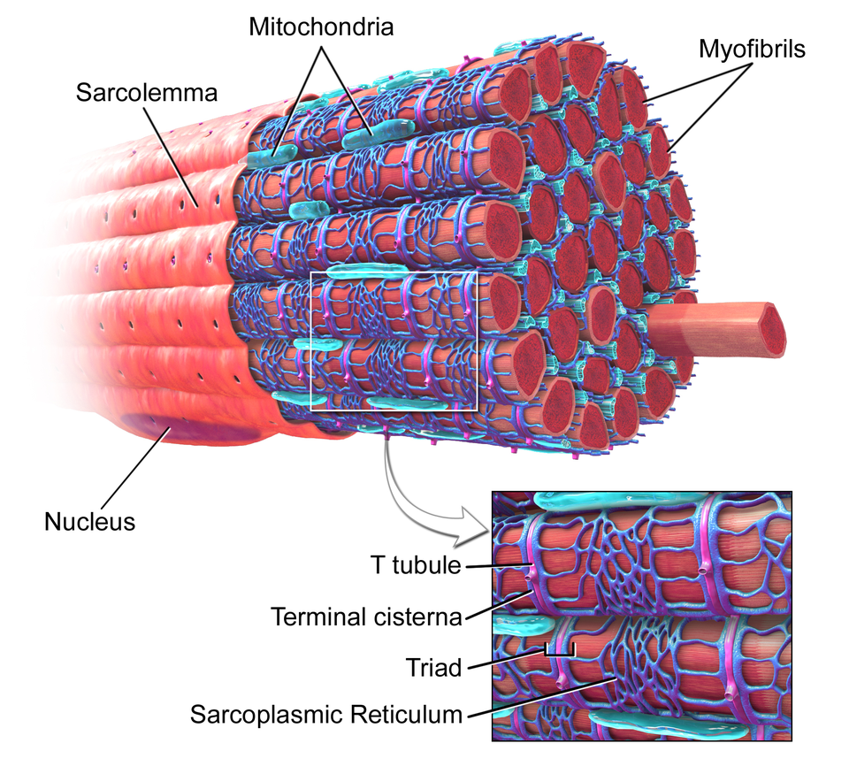

Duchenne Muscular Dystrophy
Every muscle is wrapped in a stretchy bag that keeps it together. In Duchenne, the tiny bolt that's supposed to hold that bag onto the muscle is missing from the day you're born.
So every time the muscle moves, the bag tears a little and leaks. Over and over, the muscle wears out faster than it can fix itself and slowly gets weaker. It's a "the frame is falling apart" problem.

Diagram: Blausen Medical, via Wikimedia Commons (CC BY 3.0).
DMD destroys Muscles from within because the protein anchoring the Sarcolemma is missing. During every cycle of contract and relax, the membrane tears, flooding the Sarcoplasm with calcium. This damages the muscle fibers and the structural layers around them: the endomysium hugging each fiber, the perimysium wrapping each bundle of Fascicles, and the epimysium sheathing the whole muscle, which connects to bone via tendons.
Inside the cell, each Sarcomere loses integrity — the Z line, M line, A band, and I band distort, misaligning Actin (the Thin filament) and Myosin (the Thick filament). The regulatory proteins troponin and tropomyosin can no longer reset properly, so the crossbridge cycle and its power stroke fail, crippling the sliding filament model of contraction. The Sarcoplasmic reticulum (SR) mishandles signaling, ATP is wasted, and excitation-contraction coupling degrades. Damage worsens during Eccentric contraction, while Concentric contraction, Isotonic contraction, and isometric contraction all weaken.